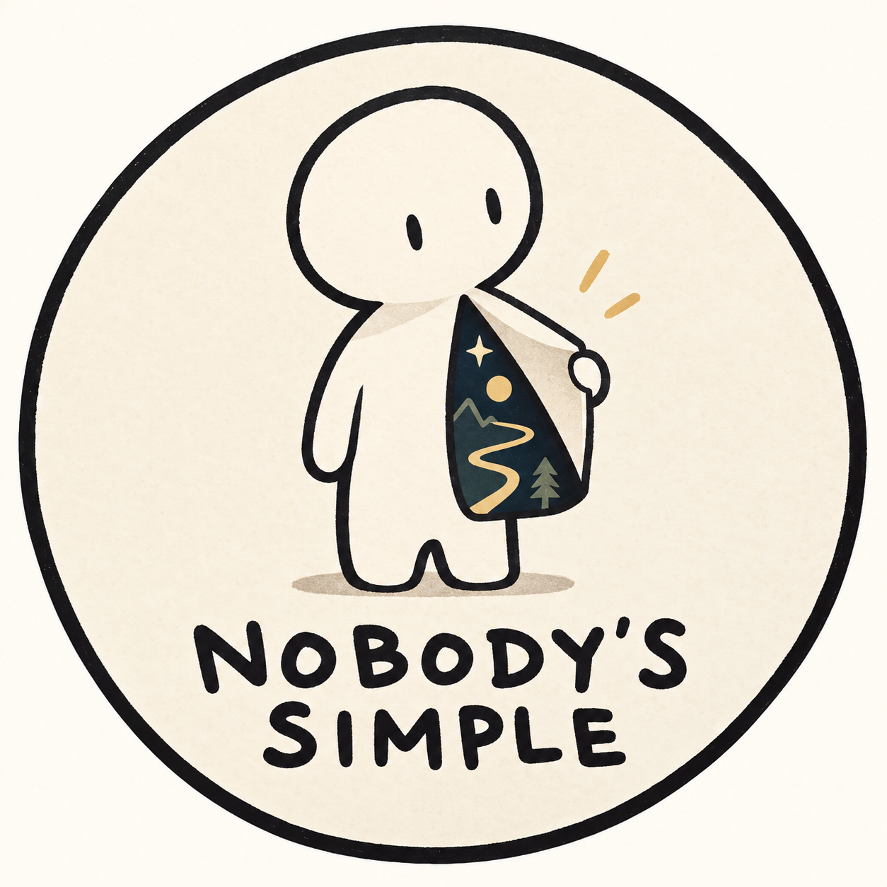

Nobody’s Simple
Staff login
YOUR WORKSPACE
Content
Manage published writing and drafts kept on this device.
| Title | Type | Status | Updated | Actions |
|---|
No content in this view yet.Start with a template on the left.
Published content is stored in the public GitHub repository. Drafts, comments, and version snapshots are stored only in this browser.
REPOSITORY MEDIA
Media library
Reuse images and files already uploaded to the website, or add new assets.
Website media is committed to GitHub and becomes public when deployed. Keep individual uploads under 8 MB; video files should be embedded from YouTube.
START WITH STRUCTURE
Templates
Choose a site-ready layout, or save your current document as a personal template.
Draft
Page width
LIVE PREVIEW
0 words1 min read0 blocks0 images